Главная
(current)
Карта сайта
Лекции
Лабораторные работы
Тесты
Самостоятельные работы
Учебные пособия
Полезные ресурсы
Мы не заставляем вас открывать каждую лекцию отдельно. Вы можете скачать архив, в котором будет выстроено всё по порядку.
Ссылка для скачивания
Лекции
1. Организация тестирования в команде разработчиков. Виды и методы тестирования
2. Структурное тестирование
3. Нагрузочное и приемочное тестирования
4. Объектно-ориентированное тестирование ИС
5. Функциональное тестирование
6. Модульное тестирование
7. Регрессионное и интеграционное тестирование
8. Системное тестирование
9. Тестирование безопасности
10. Стрессовое тестирование
11. Конфигурационное тестирование. Тестирование установки
12. Роль тестирование в жизненном цикле ПО
13. Комбинирование уровней тестирования
14. Методы тестирования на соответствие стандартам, обеспечивающим переносимость прикладных программ
15. Статические и динамические методы тестирования
16. Инспекция кода. Разбиение на эквивалентные части
17. Анализ граничных величин
18. Верификация и валидация программ
19. Тестовые сценарии, тестовые варианты
20. Оформление результатов тестирования, отчёт
21. Тестовая документация
22. Разработка тест-кейсов
23. Тестовое покрытие
24. Тестовые процедуры и протоколы
25. Инструментарии анализа качества программных продуктов в среде разработки
26. Основные понятия отладки ИС
27. Место отладки в цикле разработки ИС. Инструменты отладки ИС. Принципы и виды отладки ИС
28. Обработка исключительных ситуаций. Методы и способы идентификации сбоев и ошибок
29. Методы поиска ошибок в программах. Классификация ошибок и тестов. Выявление ошибок системных компонентов
30. Управление процессом тестирования
31. Реинжиниринг бизнес-процессов в информационных системах. Сущность реинжиниринга. Виды реинжиниринга
32. Основные этапы и принципы реинжиниринга ИС. Инструменты реинжиниринга
33. Методы моделирования бизнес-процессов
34. Понятие рефакторинга. Оптимизация программ
35. Инструментальные средства отладки программ